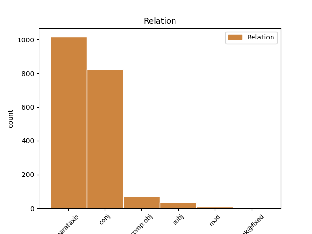
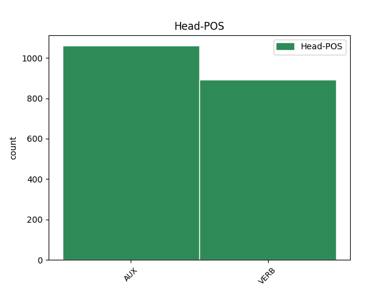
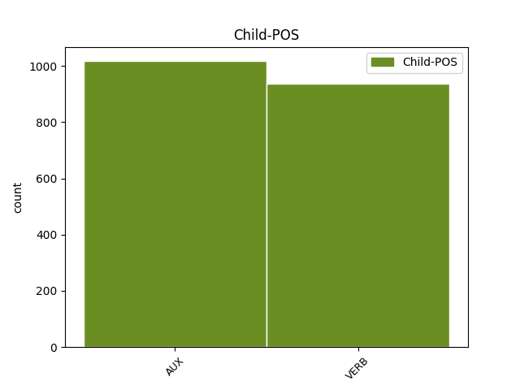

Distribution of features within this leaf



Agreement Rules sorted by frequency.
When the head token is AUX and the dependent token is AUX.
1 Njegova _ _ _ _ 0 _ _ _
2 slikarska _ _ _ _ 0 _ _ _
3 ustvarjalnost _ _ _ _ 0 _ _ _
4 je biti AUX Va-r3s-n Mood=Ind|Number=Sing|Person=3|Polarity=Pos|Tense=Pres|VerbForm=Fin 0 _ _ _
5 v _ _ _ _ 0 _ _ _
6 primerjavi _ _ _ _ 0 _ _ _
7 s _ _ _ _ 0 _ _ _
8 kakim _ _ _ _ 0 _ _ _
9 Rafaelom _ _ _ _ 0 _ _ _
10 izrazito _ _ _ _ 0 _ _ _
11 borna _ _ _ _ 0 _ _ _
12 : _ _ _ _ 0 _ _ _
13 zapustil _ _ _ _ 0 _ _ _
14 je biti AUX Va-r3s-n Mood=Ind|Number=Sing|Person=3|Polarity=Pos|Tense=Pres|VerbForm=Fin 4 parataxis _ Dep=13|Rel=PPart
15 samo _ _ _ _ 0 _ _ _
16 kakih _ _ _ _ 0 _ _ _
17 petnajst _ _ _ _ 0 _ _ _
18 slik _ _ _ _ 0 _ _ _
19 od _ _ _ _ 0 _ _ _
20 tistih _ _ _ _ 0 _ _ _
21 tridesetih _ _ _ _ 0 _ _ _
22 , _ _ _ _ 0 _ _ _
23 ki _ _ _ _ 0 _ _ _
24 jih _ _ _ _ 0 _ _ _
25 je _ _ _ _ 0 _ _ _
26 bil _ _ _ _ 0 _ _ _
27 v _ _ _ _ 0 _ _ _
28 tem _ _ _ _ 0 _ _ _
29 obdobju _ _ _ _ 0 _ _ _
30 ustvaril _ _ _ _ 0 _ _ _
31 ali _ _ _ _ 0 _ _ _
32 zastavil _ _ _ _ 0 _ _ _
33 . _ _ _ _ 0 _ _ _
When the head token is VERB and the dependent token is VERB.
1 Program _ _ _ _ 0 _ _ _
2 cpio _ _ _ _ 0 _ _ _
3 obnovi obnoviti VERB Vmer3s Aspect=Perf|Mood=Ind|Number=Sing|Person=3|Tense=Pres|VerbForm=Fin 0 _ _ _
4 imenik _ _ _ _ 0 _ _ _
5 in _ _ _ _ 0 _ _ _
6 na _ _ _ _ 0 _ _ _
7 koncu _ _ _ _ 0 _ _ _
8 izpiše izpisati VERB Vmer3s Aspect=Perf|Mood=Ind|Number=Sing|Person=3|Tense=Pres|VerbForm=Fin 3 conj _ Dep=0|Rel=Root
9 število _ _ _ _ 0 _ _ _
10 512 _ _ _ _ 0 _ _ _
11 - _ _ _ _ 0 _ _ _
12 znakovnih _ _ _ _ 0 _ _ _
13 blokov _ _ _ _ 0 _ _ _
14 , _ _ _ _ 0 _ _ _
15 ki _ _ _ _ 0 _ _ _
16 so _ _ _ _ 0 _ _ _
17 bili _ _ _ _ 0 _ _ _
18 zapisani _ _ _ _ 0 _ _ _
19 na _ _ _ _ 0 _ _ _
20 trdi _ _ _ _ 0 _ _ _
21 disk _ _ _ _ 0 _ _ _
22 . _ _ _ _ 0 _ _ _
When the head token is AUX and the dependent token is VERB.
1 KOČEVJE _ _ _ _ 0 _ _ _
2 Iz _ _ _ _ 0 _ _ _
3 Kočevja _ _ _ _ 0 _ _ _
4 proti _ _ _ _ 0 _ _ _
5 Ljubljani _ _ _ _ 0 _ _ _
6 v _ _ _ _ 0 _ _ _
7 prihodnje _ _ _ _ 0 _ _ _
8 ne _ _ _ _ 0 _ _ _
9 bodo biti AUX Va-f3p-n Mood=Ind|Number=Plur|Person=3|Polarity=Pos|Tense=Fut|VerbForm=Fin 0 _ _ _
10 vozili _ _ _ _ 0 _ _ _
11 zgolj _ _ _ _ 0 _ _ _
12 les _ _ _ _ 0 _ _ _
13 , _ _ _ _ 0 _ _ _
14 neprecenljivo _ _ _ _ 0 _ _ _
15 bogastvo _ _ _ _ 0 _ _ _
16 poraščene _ _ _ _ 0 _ _ _
17 pokrajine _ _ _ _ 0 _ _ _
18 tik _ _ _ _ 0 _ _ _
19 ob _ _ _ _ 0 _ _ _
20 hrvaški _ _ _ _ 0 _ _ _
21 meji _ _ _ _ 0 _ _ _
22 , _ _ _ _ 0 _ _ _
23 gneča _ _ _ _ 0 _ _ _
24 na _ _ _ _ 0 _ _ _
25 cesti _ _ _ _ 0 _ _ _
26 bo biti VERB Va-f3s-n Mood=Ind|Number=Sing|Person=3|Polarity=Pos|Tense=Fut|VerbForm=Fin 9 parataxis _ Dep=0|Rel=Root
27 tudi _ _ _ _ 0 _ _ _
28 zaradi _ _ _ _ 0 _ _ _
29 povečane _ _ _ _ 0 _ _ _
30 zmogljivosti _ _ _ _ 0 _ _ _
31 pri _ _ _ _ 0 _ _ _
32 proizvodnji _ _ _ _ 0 _ _ _
33 najbolj _ _ _ _ 0 _ _ _
34 znanih _ _ _ _ 0 _ _ _
35 slovenskih _ _ _ _ 0 _ _ _
36 sirov _ _ _ _ 0 _ _ _
37 . _ _ _ _ 0 _ _ _
When the head token is VERB and the dependent token is AUX.
1 Večjo _ _ _ _ 0 _ _ _
2 količino _ _ _ _ 0 _ _ _
3 pomnilnika _ _ _ _ 0 _ _ _
4 ima imeti VERB Vmpr3s-n Aspect=Imp|Mood=Ind|Number=Sing|Person=3|Polarity=Pos|Tense=Pres|VerbForm=Fin 0 _ _ _
5 grafična _ _ _ _ 0 _ _ _
6 kartica _ _ _ _ 0 _ _ _
7 , _ _ _ _ 0 _ _ _
8 večje _ _ _ _ 0 _ _ _
9 resolucije _ _ _ _ 0 _ _ _
10 barv _ _ _ _ 0 _ _ _
11 in _ _ _ _ 0 _ _ _
12 dimenzij _ _ _ _ 0 _ _ _
13 zaslona _ _ _ _ 0 _ _ _
14 je biti AUX Va-r3s-n Mood=Ind|Number=Sing|Person=3|Polarity=Pos|Tense=Pres|VerbForm=Fin 4 parataxis _ Dep=0|Rel=Root
15 sposobna _ _ _ _ 0 _ _ _
16 . _ _ _ _ 0 _ _ _
Disagree Examples:
1 Začetek _ _ _ _ 0 _ _ _
2 izvajanja _ _ _ _ 0 _ _ _
3 programa _ _ _ _ 0 _ _ _
4 je biti AUX Va-r3s-n Mood=Ind|Number=Sing|Person=3|Polarity=Pos|Tense=Pres|VerbForm=Fin 0 _ _ _
5 odvisen _ _ _ _ 0 _ _ _
6 od _ _ _ _ 0 _ _ _
7 podpisa _ _ _ _ 0 _ _ _
8 sporazuma _ _ _ _ 0 _ _ _
9 z _ _ _ _ 0 _ _ _
10 republiškim _ _ _ _ 0 _ _ _
11 zavodom _ _ _ _ 0 _ _ _
12 za _ _ _ _ 0 _ _ _
13 zdravstveno _ _ _ _ 0 _ _ _
14 zavarovanje _ _ _ _ 0 _ _ _
15 , _ _ _ _ 0 _ _ _
16 po _ _ _ _ 0 _ _ _
17 napovedih _ _ _ _ 0 _ _ _
18 pa _ _ _ _ 0 _ _ _
19 bi biti AUX Va-c Mood=Cnd|VerbForm=Fin 4 parataxis _ Dep=23|Rel=PPart
20 se _ _ _ _ 0 _ _ _
21 naj _ _ _ _ 0 _ _ _
22 to _ _ _ _ 0 _ _ _
23 zgodilo _ _ _ _ 0 _ _ _
24 prihodnji _ _ _ _ 0 _ _ _
25 mesec _ _ _ _ 0 _ _ _
26 . _ _ _ _ 0 _ _ _
1 Območje _ _ _ _ 0 _ _ _
2 medenice _ _ _ _ 0 _ _ _
3 je biti AUX Va-r3s-n Mood=Ind|Number=Sing|Person=3|Polarity=Pos|Tense=Pres|VerbForm=Fin 0 _ _ _
4 središče _ _ _ _ 0 _ _ _
5 telesa _ _ _ _ 0 _ _ _
6 , _ _ _ _ 0 _ _ _
7 glavna _ _ _ _ 0 _ _ _
8 peč _ _ _ _ 0 _ _ _
9 , _ _ _ _ 0 _ _ _
10 ki _ _ _ _ 0 _ _ _
11 greje _ _ _ _ 0 _ _ _
12 in _ _ _ _ 0 _ _ _
13 uravnava _ _ _ _ 0 _ _ _
14 vse _ _ _ _ 0 _ _ _
15 telo _ _ _ _ 0 _ _ _
16 , _ _ _ _ 0 _ _ _
17 zato _ _ _ _ 0 _ _ _
18 bi biti AUX Va-c Mood=Cnd|VerbForm=Fin 3 parataxis _ Dep=19|Rel=PPart
19 moralo _ _ _ _ 0 _ _ _
20 biti _ _ _ _ 0 _ _ _
21 vedno _ _ _ _ 0 _ _ _
22 toplo _ _ _ _ 0 _ _ _
23 . _ _ _ _ 0 _ _ _
1 S _ _ _ _ 0 _ _ _
2 tem _ _ _ _ 0 _ _ _
3 naj _ _ _ _ 0 _ _ _
4 bi biti AUX Va-c Mood=Cnd|VerbForm=Fin 0 _ _ _
5 pridobila _ _ _ _ 0 _ _ _
6 prednost _ _ _ _ 0 _ _ _
7 na _ _ _ _ 0 _ _ _
8 trgu _ _ _ _ 0 _ _ _
9 banan _ _ _ _ 0 _ _ _
10 pred _ _ _ _ 0 _ _ _
11 evropsko _ _ _ _ 0 _ _ _
12 konkurenco _ _ _ _ 0 _ _ _
13 , _ _ _ _ 0 _ _ _
14 obenem _ _ _ _ 0 _ _ _
15 pa _ _ _ _ 0 _ _ _
16 bo biti AUX Va-f3s-n Mood=Ind|Number=Sing|Person=3|Polarity=Pos|Tense=Fut|VerbForm=Fin 4 parataxis _ Dep=20|Rel=PPart
17 lahko _ _ _ _ 0 _ _ _
18 z _ _ _ _ 0 _ _ _
19 bananami _ _ _ _ 0 _ _ _
20 zadovoljila _ _ _ _ 0 _ _ _
21 lastno _ _ _ _ 0 _ _ _
22 tržišče _ _ _ _ 0 _ _ _
23 za _ _ _ _ 0 _ _ _
24 več _ _ _ _ 0 _ _ _
25 let _ _ _ _ 0 _ _ _
26 . _ _ _ _ 0 _ _ _
1 Tudi _ _ _ _ 0 _ _ _
2 v _ _ _ _ 0 _ _ _
3 Sloveniji _ _ _ _ 0 _ _ _
4 sta biti VERB Va-r3d-n Mood=Ind|Number=Dual|Person=3|Polarity=Pos|Tense=Pres|VerbForm=Fin 0 _ _ _
5 aerobika _ _ _ _ 0 _ _ _
6 in _ _ _ _ 0 _ _ _
7 fitnes _ _ _ _ 0 _ _ _
8 med _ _ _ _ 0 _ _ _
9 najbolj _ _ _ _ 0 _ _ _
10 priljubljenimi _ _ _ _ 0 _ _ _
11 oblikami _ _ _ _ 0 _ _ _
12 rekreacije _ _ _ _ 0 _ _ _
13 , _ _ _ _ 0 _ _ _
14 zato _ _ _ _ 0 _ _ _
15 bi biti AUX Va-c Mood=Cnd|VerbForm=Fin 4 conj _ Dep=16|Rel=PPart
16 morali _ _ _ _ 0 _ _ _
17 posvečati _ _ _ _ 0 _ _ _
18 več _ _ _ _ 0 _ _ _
19 pozornosti _ _ _ _ 0 _ _ _
20 tehniki _ _ _ _ 0 _ _ _
21 vadbe _ _ _ _ 0 _ _ _
22 . _ _ _ _ 0 _ _ _
1 Prihodnjič _ _ _ _ 0 _ _ _
2 vzemite vzeti VERB Vmem2p Aspect=Perf|Mood=Imp|Number=Plur|Person=2|VerbForm=Fin 0 _ _ _
3 s _ _ _ _ 0 _ _ _
4 seboj _ _ _ _ 0 _ _ _
5 Nokio _ _ _ _ 0 _ _ _
6 7270 _ _ _ _ 0 _ _ _
7 , _ _ _ _ 0 _ _ _
8 pa _ _ _ _ 0 _ _ _
9 zagotovo _ _ _ _ 0 _ _ _
10 ne _ _ _ _ 0 _ _ _
11 boste biti VERB Va-f2p-n Mood=Ind|Number=Plur|Person=2|Polarity=Pos|Tense=Fut|VerbForm=Fin 2 conj _ Dep=0|Rel=Root
12 v _ _ _ _ 0 _ _ _
13 zadregi _ _ _ _ 0 _ _ _
14 . _ _ _ _ 0 _ _ _